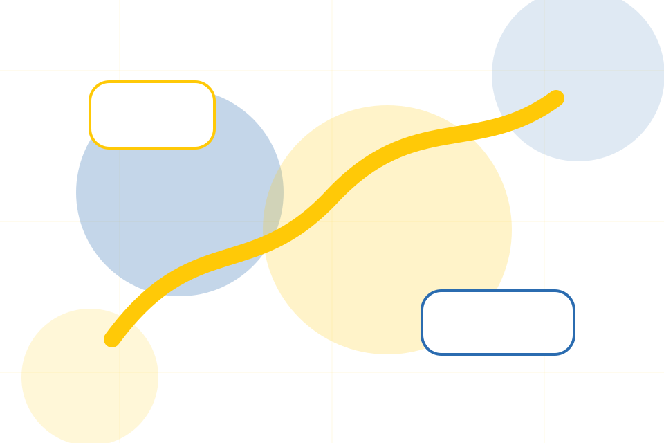
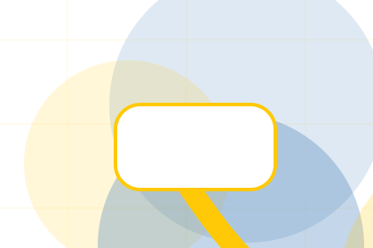
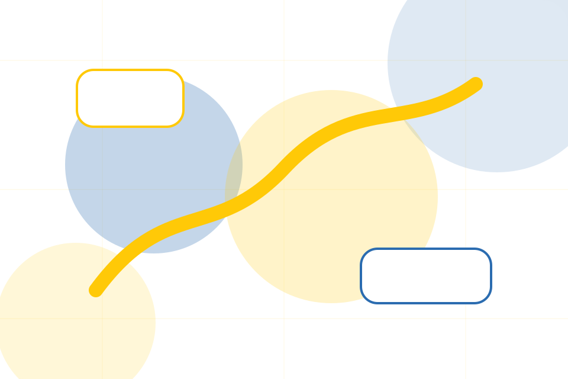
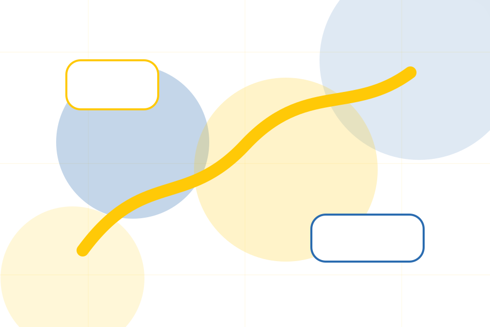
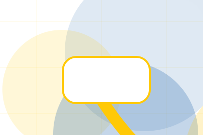
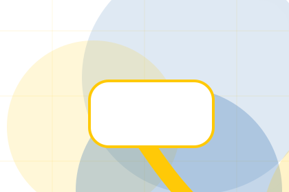
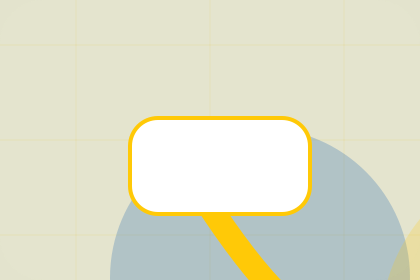

Stories / 01
Stories by Good
Stories shaped for nonprofit, charity & social impact decisions.
Stories opens as a clear nonprofit decision hub: what Good offers, who it helps, why it matters, and which route to take first.
The first screen combines positioning, proof, primary action, and fast internal navigation, so people can act immediately or compare the rest of the stories route with context.
Nonprofit scopeCompare optionsRequest advice
Yellow impact hero
Choose an impact route
Select the closest route and Good keeps the next step, proof, and follow-up expectation aligned with trust and contribution.

Stories / 03
Beneficiaries inside stories
Beneficiaries adds professional context to the stories route, using the transparent donation impact flow structure to support trust and contribution before visitors choose a next step.
Good uses impact story cards and focused copy to make the decision easier to scan, aligning the section with trust and contribution rather than filling space.
Explore StoriesContext
Beneficiaries gives the page a specific angle instead of repeating the navigation label.
Judgment
The impact story cards show what to compare, what to avoid, and what matters most for nonprofit, charity & social impact visitors.

Direction
The final cue points to a useful internal route so the section keeps the journey moving.
Stories / 04
Volunteers inside stories
Volunteers adds professional context to the stories route, using the transparent donation impact flow structure to support trust and contribution before visitors choose a next step.
Good uses impact story cards and focused copy to make the decision easier to scan, aligning the section with trust and contribution rather than filling space.
Explore StoriesVolunteers gives the page a specific angle instead of repeating the navigation label.
The impact story cards show what to compare, what to avoid, and what matters most for nonprofit, charity & social impact visitors.
The final cue points to a useful internal route so the section keeps the journey moving.
Stories / 05
Communities inside stories
Communities adds professional context to the stories route, using the transparent donation impact flow structure to support trust and contribution before visitors choose a next step.
Good uses impact story cards and focused copy to make the decision easier to scan, aligning the section with trust and contribution rather than filling space.
Explore Stories- 01
Context
Communities gives the page a specific angle instead of repeating the navigation label.
- 02
Judgment
The impact story cards show what to compare, what to avoid, and what matters most for nonprofit, charity & social impact visitors.
- 03
Direction
The final cue points to a useful internal route so the section keeps the journey moving.
Stories / 06
Photos inside stories
Photos adds professional context to the stories route, using the transparent donation impact flow structure to support trust and contribution before visitors choose a next step.
Good uses impact story cards and focused copy to make the decision easier to scan, aligning the section with trust and contribution rather than filling space.
Explore StoriesGood structures photos around context, judgment, and a clear next route so visitors can compare the block quickly before they donate today.
Donate Today

Stories / 07
Outcomes visitors can see
Outcomes shows what changes after the work: clearer decisions, visible progress, and proof points that connect the offer to real outcomes.
The layout connects before-and-after thinking with measured outcomes, making the result easy to scan without promising what the business cannot guarantee.
Explore Stories

Before
The uncertainty, delay, or missed opportunity visitors bring into outcomes.
Stories / 09
Read inside stories
Read adds professional context to the stories route, using the transparent donation impact flow structure to support trust and contribution before visitors choose a next step.
Good uses impact story cards and focused copy to make the decision easier to scan, aligning the section with trust and contribution rather than filling space.
Explore StoriesRead gives the page a specific angle instead of repeating the navigation label.
The impact story cards show what to compare, what to avoid, and what matters most for nonprofit, charity & social impact visitors.
The final cue points to a useful internal route so the section keeps the journey moving.
Stories / 10
Donate Today
Good closes the stories route with a clear action, a quick reminder of the value, and a low-friction way to donate today.
Visitors who are ready can use the primary action. Visitors who are still comparing can scan the section links, proof, and support routes before they donate today.
Donate TodayThe final block keeps the choice simple: act now, compare one more proof route, or send enough detail for a focused response.
Donate Todaytrust and contribution
Donate Today
A donor site with bold yellow impact modules, transparent metrics, story cards, and donation selector. Stories ends with a direct path to donate today, plus enough context for visitors who still need to compare.

Donate TodayImportant notes before you act
Donation use statements must match governance records, reporting, and local fundraising rules.